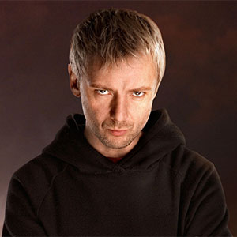

[Primary Navigation]

| Daleks |
| Cyberman |
| The Master |
| Lady Cassandra |
| Davros |
| Weeping Angels |
The Master
Portrayed by Geoffery Beevers
The Master — originally called Koschei and known by many other temporary aliases — was a renegade Time Lord and the Doctor's arch-nemesis.
Although they were originally boyhood friends, one of the Master's primary goals was to destroy the Doctor and Earth while acting on a number of schemes, both petty and gross.
The Master was referred to as a "jackanapes" and an "unimaginative plodder" by the Third Doctor , the "quintessence of evil" by the Fourth Doctor, "one of the most evil and corrupt beings [the] Time Lord race [had] ever produced" and that his "crimes [were] without number and [his] villainy without end" by High Council President Borusa, "pure evil" by the Eighth Doctor, "stone-cold brilliant" by the Tenth Doctor , and "the Time Lords' most infamous child" by Time Lord founder Rassilon.
It was eventually discovered that the Master's diabolical madness was partially the result of a genuine malady in the form of a never-ending drumming sound that had been retroactively implanted inside his head by the Time Lords on the last day of the Last Great Time War to further their own goals.